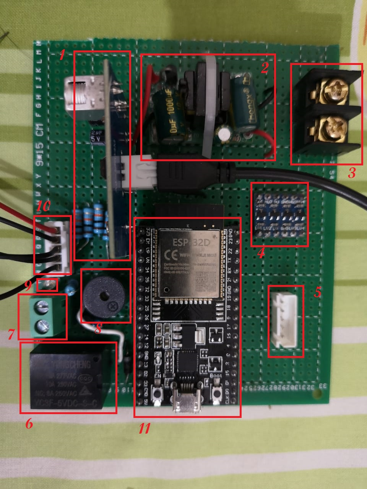
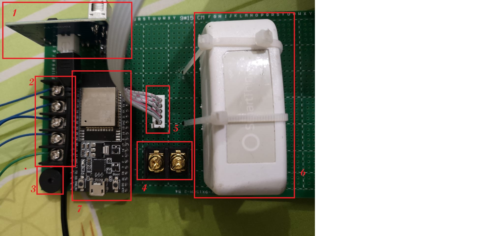

A two-PCB water-management system: a secondary unit that senses level by both conduction and ultrasonic methods in a supply tank, and a main unit that combines its own sensing with the secondary's readings to decide when the pump should run.
Overview
Water-level sensing looks simple until a probe fouls, a tank shape doesn't suit one sensing method, or conditions change between installations. This build splits the job across two boards: a secondary PCB sitting on the supply (main) tank that measures level by conduction and ultrasonic ranging, and a main PCB on the overhead tank that senses its own level and pulls in the secondary's readings over a wired connection to decide whether the pump should run.
Main PCB
The main board carries the pump-side electronics: an ESP32 Devkit v4 as the controller, a relay in series with the pump, a buzzer and status LED, a logic-level shifter, a water-level indicator LED, and the sensing-wire connector for the tank it sits on. It also takes 220 VAC input directly, since it's the board actually switching the pump.

Secondary PCB
The secondary board is simpler and purely a sensing node: an ultrasonic sensor PCB, its own 220 VAC-fed power supply, an ESP32 Devkit v4, a buzzer, a water-level indicator LED, and the sensing-wire connector for the tank it monitors. It reports its readings back to the main board rather than driving anything itself.

Wiring the sensing probes
Both boards use the same conduction-sensing scheme. One wire is the common point and sits at the bottom of the tank; the remaining four wires are the level-sensing probes and aren't fixed to specific heights. If one probe reads high, the controller reads that as 25% full; two probes high reads as 50%, and so on in steps up the tank.
Flash the firmware → connect AC input → (main board only) connect the pump → fix the ultrasonic sensor in the tank → attach the sensing wires.
Reading the on-board LED
Each board's indicator LED reports tank level in five states, without needing to check the app or a dashboard:
| LED state | Water level |
|---|---|
| Flashing red | Below 25% |
| Stable red | 25% – 50% |
| Stable blue | 50% – 75% |
| Flashing green | 75% – 100% |
| Stable green | 100% |
How the two boards work together
Both circuits detect water level independently — the secondary PCB by conduction and ultrasonic ranging, the main PCB by its own conduction sensing — and the secondary transmits its readings to the main board, which makes the final call on the pump.
- The pump turns on when the main (overhead) tank is above 25% and the secondary (supply) tank is below 25%.
- The pump turns off when the secondary tank is full, or when the main tank drops below 25%.
Pairing two sensing methods on the tank that matters most for supply, and splitting the sensing and switching roles across two boards, keeps a fouled probe or a noisy ultrasonic reading on one tank from being the single point of failure for the whole system.